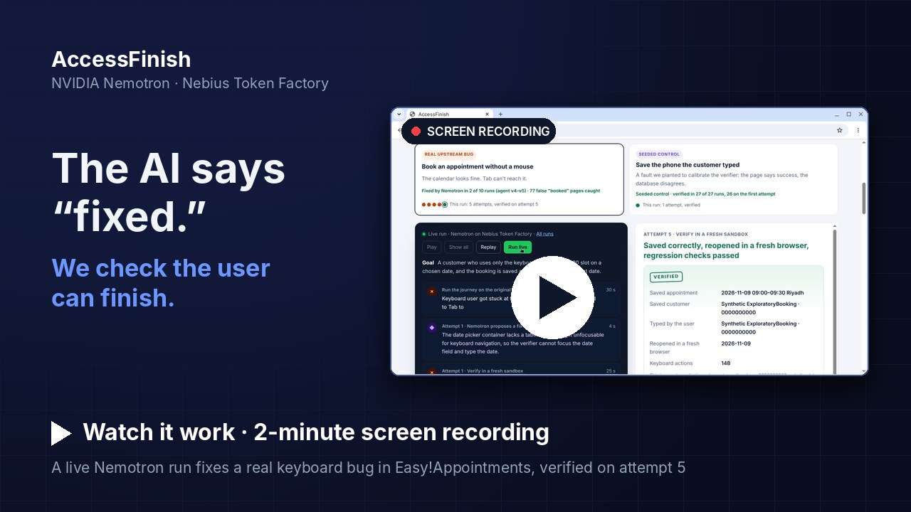

NVIDIA Nemotron · Nebius Token Factory
The AI says “fixed.”
We check the user can finish.
AccessFinish is a repair agent that doesn't trust a green page. It drives the real journey with a keyboard, reads what was actually saved, reopens it in a fresh browser, and keeps fixing until the outcome is right.

Film · 2 minutesOn YouTube · narrated, with captions · Nemotron fixes a real keyboard bug and AccessFinish proves itAgent run
A loop that ends at the saved outcome, not the success page.
- ObserveA real browser drives the journey with the keyboard only and records where focus goes and where it gets stuck.
- Diagnose & repairNemotron 3 Super reads the evidence and the source, finds the cause and writes exact code edits. No root cause is supplied; the acceptance checks name the date field the verifier types into.
- Verify for realEach patch that applies is built in a fresh, offline sandbox. The booking is made, read back from the database with a read-only account, and reopened in a fresh browser.
- Feed backIf anything is off — a build error, a stuck key, a wrong saved value, a broken mouse path — the evidence goes back to Nemotron and it tries again.
Why not just check the confirmation page?
Because it lies. In our runs, an AI fix reached a booked confirmation — times while the booking was saved, or reopened, with the wrong date. In the phone case the page says booked while the database holds 0000000000, and a patch that hardcodes the test number would fail when a second customer types 0000000073. AccessFinish checks all of it.
Why keyboard journeys?
Millions of people navigate with a keyboard or assistive technology. A form that "loads" but can't be completed locks them out, and since June 2025 the European Accessibility Act expects in-scope services to work for them.
What “verified” proves, and what it doesn't
Proves
- A keyboard-only browser session reaches the date, books the slot and sees the confirmation.
- The database row, read with a read-only account, holds the date and customer that were typed.
- Reopening the booking in a fresh browser shows the same date.
- A mouse booking with different data, a cleared date and a reserved slot still behave, and nothing else in the database changed.
Doesn't prove
- That the calendar grid is usable with arrow keys: the verifier types the date into the field it names in its acceptance checks.
- Anything a screen-reader user study would show.
- That it generalises: one app, two journeys, two editable files.
- Which days the calendar disables after a typed month change; the oracle does not check that.
Synthetic data in a pinned copy of the open-source Easy!Appointments app. Two journeys today; the phone fault was seeded on purpose. All runs were made live on GitHub Actions with Nemotron 3 Super on Nebius Token Factory, and every one, including failures, is saved with its raw evidence — see Evidence.